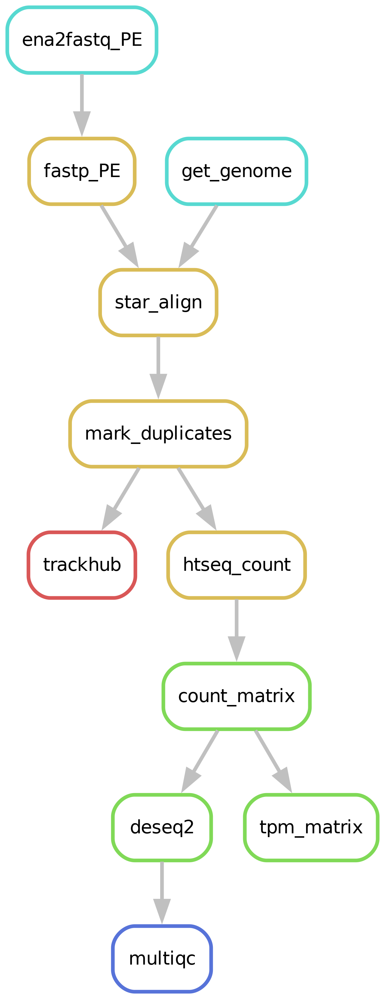

RNA-seq¶
Running an RNA-seq analysis has never been easier!
Pipeline steps¶

Downloading of sample(s)¶
Depending on whether the samples you start seq2science with is your own data, public data, or a mix, the pipeline might start with downloading samples. You control which samples are used in the samples.tsv. Background on public data can be found here.
Downloading and indexing of assembly(s)¶
Depending on whether the assembly and its index you align your samples against already exist seq2science will start with downloading of the assembly through genomepy.
Read trimming¶
The pipeline starts by trimming the reads with Trim Galore! or Fastp (the default). The trimmer will automatically trim the low quality 3’ ends of reads, and removes short reads. During the quality trimming it automatically detects which adapter was used, and trims this as well. Trimming parameters for the pipeline can be set in the configuration.
Alignment¶
Reads are aligned using HISAT2 or STAR (the default).
Sensible defaults have been set, but can be overwritten for either (or both) the indexing and alignment by specifying them in the config.yaml.
The pipeline will check if the assembly you specified is present in the genome_dir, and otherwise will download it for you through genomepy. All these aligners require an index to be formed first for each assembly, but don’t worry, the pipeline does this for you.
Bam sieving¶
After aligning the bam you can choose to remove unmapped reads, low quality mappings, duplicates, and multimappers. Again, sensible defaults have been set, but can be overwritten.
Strandedness¶
Most sequencing protocols at present are strand-specific.
This specificity can be used to help identify pseudogenes originating from antisense DNA, or genes with overlapping regions on opposite strands without ambiguity.
Strandedness is inferred automatically for all RNA-seq samples.
For aligners it is inferred by RSeQC, the results of which can be reviewed in the MultiQC.
RSeQC inference can be overwritten by column strandedness in the samples.tsv.
This column may contain identifiers no, forward or reverse.
If strandedness is unknown (for some samples), fields may be left blank or filled with nan.
Setting ignore_strandedness in the config.yaml will resulting in gene counting to assume all reads are unstranded.
Gene quantification methods¶
RNA-seq can be performed using gene counting or abundance estimation methods. Gene counting methods require BAM files, which are generated and processed in the Alignment, Bam sieving and Strandedness steps. Gene abundances require trimmed fastqs, and are therefore not influenced by the aforementioned steps.
Gene counts (with HTSeq/featureCounts)¶
Gene counts are obtained from the filtered BAM files using either HTSeq or featureCounts (default HTSeq).
These counts are then combined into a count matrix per assembly for use in downstream analyses.
Gene abundances (with Salmon)¶
Gene abundances can be estimated using Salmon.
Reads are aligned against the transcriptome to obtain transcript abundances (sequence strandedness is inferred automatically by Salmon), then summarized to gene-level using tximeta.
The Gene-level counts matrix are output similar to the gene counts method.
Additionally, Salmon generates a gene-level TPM matrix and a SingleCellExperiment object which can be opened in R, containing the transcript- and gene-level summaries.
Differential gene expression analysis¶
Seq2science outputs gene counts matrices for each assembly. Additionally, it can perform differential expression analysis automatically. See the Differential gene/peak analysis page for more information!
Differential transcript usage¶
Quantifying with Salmon, the transcript-level summaries in the SingleCellExperiment object should be usable for differential transcript analysis with DEXseq, as described here.
Differential exon usage¶
Differential exon analysis by DEXseq can be automatically prepared by setting dexseq: True in the config.yaml.
This will let seq2science to output an exon counts matrix per assembly, which can be loaded directly into DEXSeqDataSet().
Note: this utilizes scripts implemented by DEXseq, which are built for Ensembl genomes.
Trackhub¶
A UCSC compatible trackhub can be generated for this workflow. See the trackhub page for more information!
Filling out the samples.tsv¶
Before running a workflow you will have to specify which samples you want to run the workflow on.
Each workflow starts with a samples.tsv as an example, and you should adapt it to your specific needs.
As an example, the samples.tsv could look something like this:
sample assembly technical_replicates descriptive_name
GSM123 GRCh38 heart_1 heart_merged GSM234
GSM321 GRCh38 heart_1 heart_merged GSM234
GSMabc GRCh38 heart_2 heart_not_merged GSM234
GSMxzy danRer11 stage_8 stage_8 GSM234
GSM890 danRer11 stage_9 stage_9 GSM234
Sample column¶
If you use the pipeline on public data this should be the name of the accession (e.g. GSM2837484). Accepted formats start with “GSM”, “SRR”, “SRX”, “DRR”, “DRX”, “ERR” or “ERX”.
If you use the pipeline on local data this should be the basename of the file without the extension(s). For example:
/home/user/myfastqs/sample1.fastq.gz——->sample1for single-ended data/home/user/myfastqs/sample2_R1.fastq.gz┬>sample2for paired-ended data
/home/user/myfastqs/sample2_R2.fastq.gz┘
For local data, some fastq files may have slightly different naming formats.
For instance, Illumina may produce a sample named sample3_S1_L001_R1_001.fastq.gz (and the R2 fastq).
Seq2science will attempt to recognize these files based on the sample name sample3.
For both local and public data, identifiers used to recognize fastq files are the fastq read extensions (R1 and R2 by default) and the fastq suffix (fastq by default).
The directory where seq2science will store (or look for) fastqs is determined by the fastq_dir config option.
In the example above, the fastq_dir should be set to /home/user/myfastqs.
These setting can be changed in the config.yaml.
Assembly column¶
Here you simply add the name of the assembly you want your samples aligned against and the workflow will download it for you.
Descriptive_name column¶
The descriptive_name column is used for the trackhub and multiqc report. In the trackhub your tracks will be called after the descriptive name, and in the multiqc report there will be a button to rename your samples after this column. The descriptive name can not contain ‘-‘ characters, but underscores ‘_’ are allowed.
technical_replicates column¶
Technical replicates, or any fastq file you may wish to merge, are set using the technical_replicates column in the samples.tsv file.
All samples with the same name in the technical_replicates column will be concatenated into one file with the replicate name.
Example samples.tsv utilizing replicate merging:
sample assembly technical_replicates
GSM123 GRCh38 heart
GSMabc GRCh38 heart
GSMxzy GRCh38 stage8
GSM890 GRCh38
Using this file in the alignment workflow will output heart.bam, stage8.bam and GSM890.bam. The MultiQC will inform you of the trimming steps performed on all samples, and subsequent information of the ‘replicate’ files (of which only heart is merged).
Note: If you are working with multiple assemblies in one workflow, replicate names have to be unique between assemblies (you will receive a warning if names overlap).
keep¶
Replicate merging is turned on by default.
It can be turned off by setting technical_replicates in the config.yaml to keep.
Colors column¶
If you are producing a UCSC trackhub, seq2science will assign an alternating color gradient to your samples to distinguish them. You can optionally specify the colors of each track by adding this column. Colors can be added by name (google “matplotlib colors” for the options), or RGB values. Empty fields are considered black.
Filling out the config.yaml¶
Every workflow has many configurable options, and can be set in the config.yaml file.
In each config.yaml we highlighted a couple options that we think are relevant for that specific workflow, and set (we think) reasonable default values.
When a workflow starts it prints the configuration variables influencing the workflow, and (almost) all these values can be added in the config.yaml and changed to your liking.
You can see the complete set of configurable options in the extensive docs.
Best practices¶
Genome assembly and gene annotation¶
The choice of genome assembly and gene annotation is of significant influence to the downstream analysis. To explore available options, you could use genomepy, which comes installed in the seq2science conda environment. Installing the desired genome and gene annotation in the {genomes_dir} will cause seq2science to use these files.
If the genome/annotation is missing from the {genomes_dir}, seq2science will attempt to download the named assembly from Ensembl, UCSC and the NCBI (in that order).
Aligners: STAR vs HISAT2¶
Both aligners have been found to perform well. Selection should be dependent on familiarity and configuration options.
Quantifier: counts vs quantification¶
Both methods have been found valid for differential gene expression analysis, although results vary somewhat. Caution is advised for the genes found by only one of the two methods.
Genome/Aligner/Quantifier¶
The most significant choice to be made is the genome assembly and gene annotation.
Reviewing the results¶
Unless configured not to, Seq2science makes several assumptions on your data which may be incorrect:
that strandedness of each sample can be determined automatically.
that duplicate reads are mostly caused by natural overexpression, not by library artifacts.
These assumptions can be tested by inspecting the MultiQC.
Should the results be disappointing, they can be overwritten using the strandedness column in the samples.tsv and the markduplicates variable in the config.yaml respectively.